High-Bypass Turbofan
For a four-person ME3510 project, I developed the complete final CAD model and assembly structure for a simplified high-bypass turbofan and performed three analysis-driven redesign studies using both hand calculations and SolidWorks simulation.
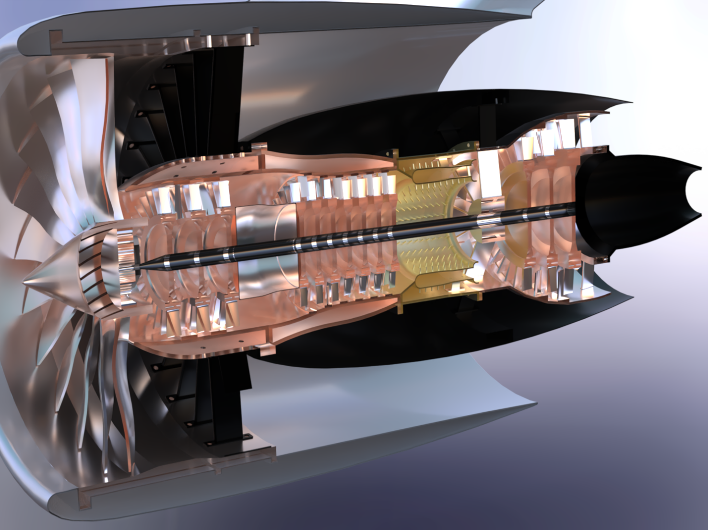
Reduce weight and improve performance without sacrificing reliability
The project used a simplified turbofan assembly to investigate how geometry changes could reduce unnecessary mass or improve aerodynamic behavior while maintaining acceptable structural performance.
Three questions I analyzed
Pylon: How much material could be removed while maintaining strength?
HP compressor fan: Could mass be reduced while preserving fatigue performance?
Outer casing: Could a smoother profile reduce aerodynamic drag?
Complete final CAD ownership + three primary analyses
CAD & Assembly
I completed all final CAD modeling, built every subassembly, and integrated the complete engine assembly. A teammate created an early combustor concept, but I modeled the final combustion section used in the finished assembly.
Documentation
I created all exploded assembly drawings used for the project documentation.
Analysis
I performed the hand calculations and SolidWorks analyses for the pylon, high-pressure compressor fan, and external casing flow studies.
Team scope
The compressor-casing pressure analysis was completed by another team member and is not presented as my work.
Building the system before analyzing individual components
The engine was organized into functional subassemblies so individual sections could be developed and evaluated separately before integration into the complete model. The final system included compressor sections, combustor, aft section, outer casing, pylon, and internal mechanical components including a planetary gear assembly.
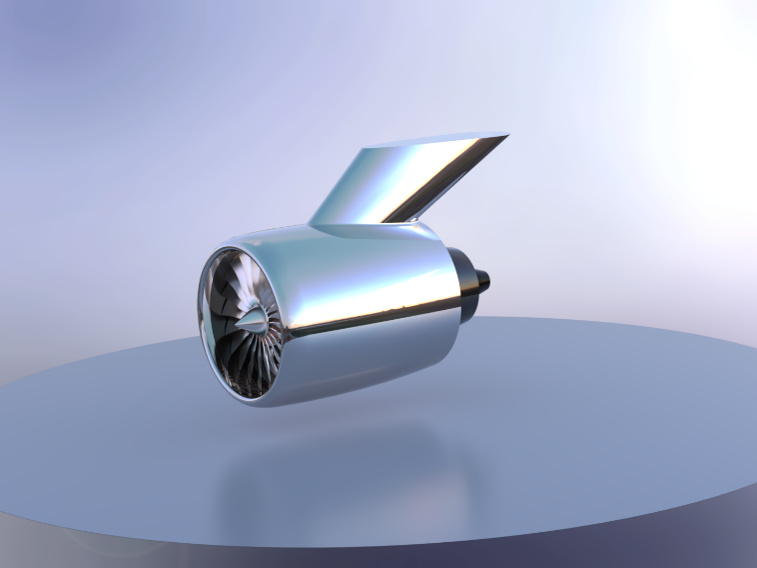
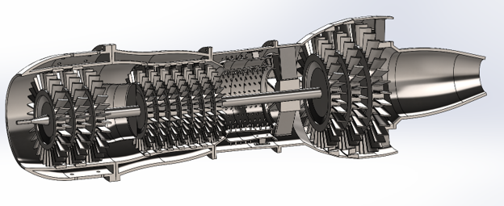
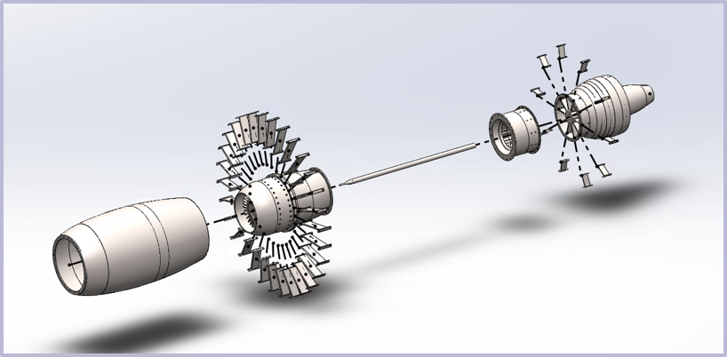
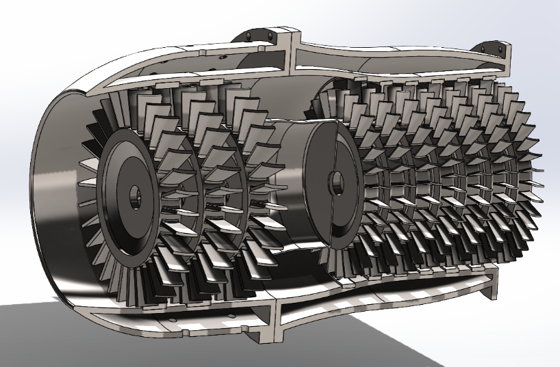
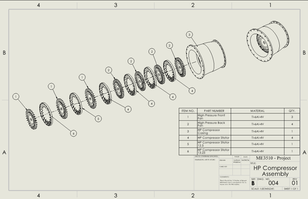
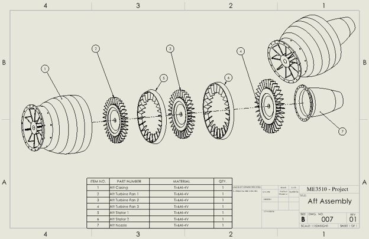
Planetary gear subsystem
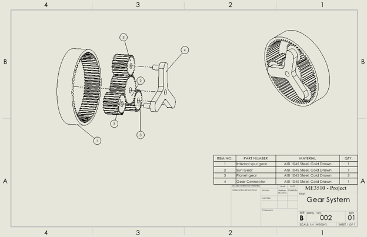
Pylon — using excess strength margin to reduce weight
The original pylon had substantial structural margin. The redesign therefore focused on a simple, manufacturable change: decreasing the wall thickness while keeping the same overall architecture and strong material.
The thinner wall maintained acceptable strength while reducing unnecessary material and weight. I checked the redesign using both a hand calculation and FEA so the simulation had an independent reasonableness check.
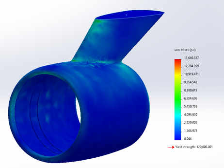
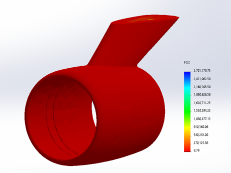
HP compressor fan — reducing mass while preserving fatigue performance
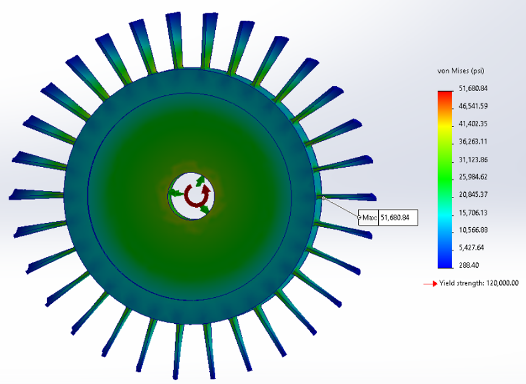
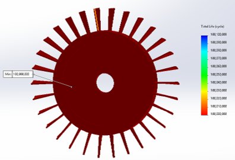
The compressor fan was evaluated under rotational loading and fatigue. Because the original design had unused performance margin, I reduced material in several areas rather than changing the basic architecture.
The redesign used slightly thinner blades, a thinner outer ring in the radial direction, and a shorter/thinner inner cylindrical section surrounding the shaft. The updated geometry was then re-evaluated with the same analytical and simulation approach.
Outer casing — reshaping the airfoil profile to reduce drag
The outer casing was treated as an aerodynamic surface rather than only a shell around the engine. I redesigned the profile with a smoother front edge where the air first contacts the casing and a more streamlined trailing edge.
I then compared hand calculations with SolidWorks Flow Simulation to evaluate whether the modified geometry improved the drag behavior.
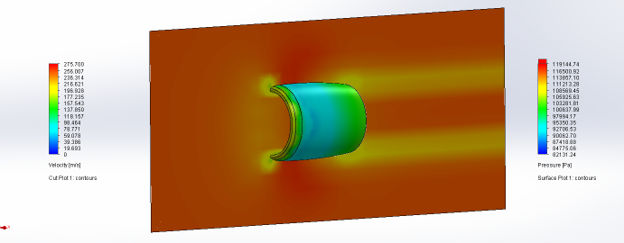
Use the analysis, change the design, then check it again
Pylon
High structural margin → reduce wall thickness.
Compressor Fan
Fatigue margin → remove material from blades, ring, and hub section.
Outer Casing
Drag behavior → smooth leading edge and streamline trailing edge.
A complete CAD system supported by analysis-driven redesign
The project combined large-assembly CAD, engineering drawings, structural analysis, fatigue analysis, flow simulation, and hand calculations. The most useful lesson was learning that analysis is strongest when it answers a design question and directly leads to a geometry decision.